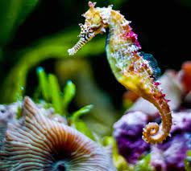

A seahorse (also written sea-horse and sea horse) is any of 46 species of small marine fish in the genus Hippocampus. "Hippocampus" comes from the Ancient Greek hippókampos (ἱππόκαμπος), itself from híppos (ἵππος) meaning "horse" and kámpos (κάμπος) meaning "sea monster"[4][5] or "sea animal".[6] Having a head and neck suggestive of a horse, seahorses also feature segmented bony armour, an upright posture and a curled prehensile tail.[7] Along with the pipefishes and seadragons (Phycodurus and Phyllopteryx) they form the family Syngnathidae.